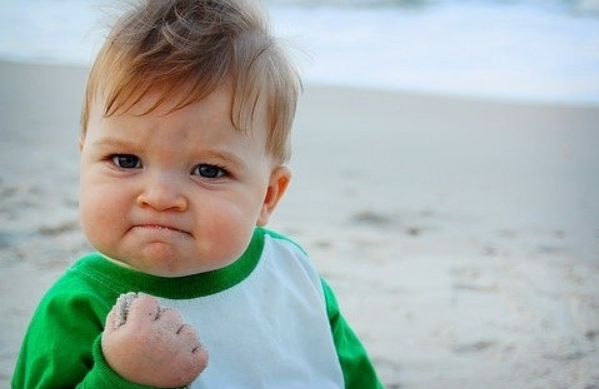

때는 2020년 12월 말 김태은은 체중계 앞에 자기 몸무게 숫자를 보고 놀라는데... 체중계 몸무게는 어언 95.5kg 였다. 그래서 그는 오랫동안 생각했었던 다이어트를 결심하는데 막상 다이어트를 할려니 어떻게 해야할지 몰라서 그의 계약직 친구 '오민석'에게 조언을 부탁한다. 평소 김태은은 자기 몸무게를 부끄러워하며 남들에게 잘 보여주지도 않고 늘 숨기기에 급급했지만 이번만큼은 큰 결심을 하고 남들에게 조언을 구하는거 같았다.

김태은은 다이어트 도시락을 구매하여 매 끼니대신 다이어트 도시락을 먹었고 틈날땐 운동도 병행하며 물도 자주 마셔주면서 다이어트를 시작했었다.